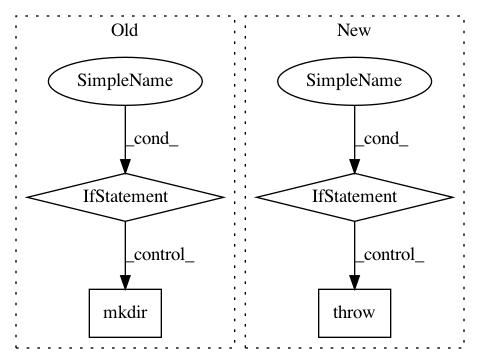

9267d77a87ac5d6736953f4822deab36b20945c7,nlp_architect/models/absa/inference/inference.py,SentimentInference,run_multiple,#SentimentInference#Any#Any#Any#,101
Before Change
docs: Iterable of strings or path to directory or txt/csv file containing documents
data_name (optional): Used for parsed files directory name.
if self.parser == "bist":
raise NotImplementedError("BIST multithreading not implemented.")
if data_name:
dir_name = data_name
elif isinstance(docs, (list, GeneratorType)):
dir_name = "unnamed_data"
else:
dir_name = Path(docs).stem
out_dir = Path(out_base_dir) / "parsed" / dir_name
out_dir.mkdir(parents=True, exist_ok=True)
parse_docs(self.parser, docs, out_dir=out_dir)
sentiment_docs = {}
for parsed_doc in tqdm(_load_parsed_docs_from_dir(out_dir).values()):
After Change
def run_multiple(self, data: Union[str, PathLike] = None, parsed_data: Union[str, PathLike] = None,
out_dir: Union[str, PathLike] = INFERENCE_OUT):
if not parsed_data:
if not self.parser:
raise RuntimeError("Parser not initialized (try parse=True at init)")
parsed_dir = Path(out_dir) / "parsed" / Path(data).stem
parsed_data = self.parse_data(data, out_dir=parsed_dir)
sentiment_docs = {}
for f, parsed_doc in tqdm(_load_parsed_docs_from_dir(out_dir)):
sentiment_doc = self.run(parsed_doc=parsed_doc)
sentiment_docs[f] = sentiment_doc
In pattern: SUPERPATTERN
Frequency: 3
Non-data size: 4
Instances
Project Name: NervanaSystems/nlp-architect
Commit Name: 9267d77a87ac5d6736953f4822deab36b20945c7
Time: 2020-09-22
Author: daniel.korat@intel.com
File Name: nlp_architect/models/absa/inference/inference.py
Class Name: SentimentInference
Method Name: run_multiple
Project Name: dmlc/gluon-cv
Commit Name: 2716ec90b5be79d67cb39c46f1182b9827fa60bc
Time: 2020-05-03
Author: 42975160+HieronymusLex@users.noreply.github.com
File Name: scripts/datasets/market1501.py
Class Name:
Method Name: main
Project Name: danforthcenter/plantcv
Commit Name: 6a9c9bdc8a438460d9d8500e323eea510883d6c6
Time: 2019-10-21
Author: dschneiderch@users.noreply.github.com
File Name: plantcv/utils/sample_images.py
Class Name:
Method Name: sample_images